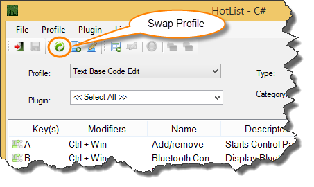

Profile Swap switches between the different profiles currently installed. If the Tray is running then your can launch the Profile Swap window show in figure 1 and choose a different profile to swap.
You can also swap profiles in the Hotlist by clicking on the Swap Profile button as show in figure 2. The Swap Profile button is only available if the selected profile is not the active profile.

